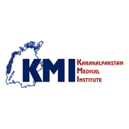
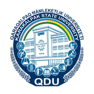
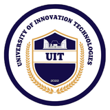
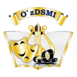
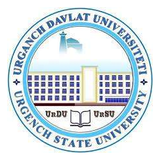

Pitkeriwshiler
Sońǵı tórt jılda mektebimizdi 141 oqıwshı pitkerdi. Olardıń 131 joqarı oqıw orınlarında, 6 texnikumda oqıp atır.
Jıllar boyınsha
- Joqarı oqıw orını
- Texnikum
- Maǵlıwmat kiritilmegen
Pitkeriwshilerdiń sertifikatları
Kúshli nátiyjeler — jaqsı joqarı oqıw orınlarına jol.
Ósiw
Sertifikatı bar pitkeriwshiler
Qaraqalpaqstannan tısqarıda oqıytuǵınlar
Medicina hám injenerlik/IT
Medicina
10 oqıw orınında

Qaraqalpaqstan medicina institutı4 Abu Áli ibn Sina atındaǵı Nókis 2-sanlı jámiyet salamatlıǵı texnikumı2
Abu Áli ibn Sina atındaǵı Nókis 2-sanlı jámiyet salamatlıǵı texnikumı2 Urgench mámleketlik medicina institutı2
Urgench mámleketlik medicina institutı2
Injenerlik hám IT
8 oqıw orınında
 Nókis mámleketlik texnika universiteti5
Nókis mámleketlik texnika universiteti5
Berdaq atındaǵı Qaraqalpaq mámleketlik universiteti5 Qaraqalpaqstan awıl xojalıǵı hám agrotexnologiyalar institutı1
Qaraqalpaqstan awıl xojalıǵı hám agrotexnologiyalar institutı1
Jıl boyınsha kóriw
Qay jerde oqıp atır
- Berdaq atındaǵı Qaraqalpaq mámleketlik universitetiNókis62
 Ájiniyaz atındaǵı Nókis mámleketlik pedagogikalıq institutıNókis12
Ájiniyaz atındaǵı Nókis mámleketlik pedagogikalıq institutıNókis12- Nókis mámleketlik texnika universitetiNókis10
 Nókis innovaciyalıq institutıNókis4
Nókis innovaciyalıq institutıNókis4 Ózbekstan mámleketlik jáhán tilleri universitetiTashkent4
Ózbekstan mámleketlik jáhán tilleri universitetiTashkent4- Qaraqalpaqstan medicina institutıNókis4
- Qaraqalpaqstan awıl xojalıǵı hám agrotexnologiyalar institutıNókis3
 Áskeriy qáwipsizlik hám qorǵanıw universitetiTashkent3
Áskeriy qáwipsizlik hám qorǵanıw universitetiTashkent3
Barlıq 34 oqıw orını

Innovaciyalıq texnologiyalar universitetiNókis3
Ózbekstan mámleketlik óner hám mádeniyat institutı Nókis filialıNókis2 Nawayı mámleketlik universitetiNawayı2
Nawayı mámleketlik universitetiNawayı2- Abu Áli ibn Sina atındaǵı Nókis 2-sanlı jámiyet salamatlıǵı texnikumı texnikumNókis2
 Tashkent mámleketlik ekonomika universitetiTashkent2
Tashkent mámleketlik ekonomika universitetiTashkent2- Urgench mámleketlik medicina institutıUrgench2
 Tashkent mámleketlik medicina universiteti Shirshıq filialıTashkent2
Tashkent mámleketlik medicina universiteti Shirshıq filialıTashkent2 Aralboyı medicina hám transport texnikumı texnikumNókis2
Aralboyı medicina hám transport texnikumı texnikumNókis2 Ózbekstan mámleketlik óner hám mádeniyat institutıTashkent1
Ózbekstan mámleketlik óner hám mádeniyat institutıTashkent1- University of Business and Science Tashkent filialıTashkent1
- Kegeyli rayonı 3-sanlı texnikumı texnikumKegeyli1
 MIFI milliy izertlew yadro universitetiniń Tashkent filialıTashkent1
MIFI milliy izertlew yadro universitetiniń Tashkent filialıTashkent1 Muhammad al-Xorezmiy atındaǵı Tashkent informaciyalıq texnologiyalar universitetiTashkent1
Muhammad al-Xorezmiy atındaǵı Tashkent informaciyalıq texnologiyalar universitetiTashkent1 Mirzo Ulıǵbek atındaǵı Ózbekstan milliy universitetiTashkent1
Mirzo Ulıǵbek atındaǵı Ózbekstan milliy universitetiTashkent1 Samarqand mámleketlik medicina universitetiSamarqand1
Samarqand mámleketlik medicina universitetiSamarqand1 Jańa Ózbekstan universitetiTashkent1
Jańa Ózbekstan universitetiTashkent1- Abu Áli ibn Sina atındaǵı Nókis 1-sanlı jámiyet salamatlıǵı texnikumı texnikumNókis1
 «Cyber University» mámleketlik universitetiTashkent1
«Cyber University» mámleketlik universitetiTashkent1 Qarshı mámleketlik universitetiQarshı1
Qarshı mámleketlik universitetiQarshı1 Andijan mámleketlik medicina institutıAndijan1
Andijan mámleketlik medicina institutıAndijan1 Samarqand veterinariya medicinası, sharwashılıq hám biotexnologiyalar universiteti Nókis filialıNókis1
Samarqand veterinariya medicinası, sharwashılıq hám biotexnologiyalar universiteti Nókis filialıNókis1 Samarqand mámleketlik pedagogikalıq institutıSamarqand1
Samarqand mámleketlik pedagogikalıq institutıSamarqand1 Namangan mámleketlik universitetiNamangan1
Namangan mámleketlik universitetiNamangan1
Abu Rayxan Beruniy atındaǵı Urgench mámleketlik universitetiUrgench1- RANCH texnologiya universiteti Nókis kampusıNókis1
 Termiz mámleketlik universitetiTermiz1
Termiz mámleketlik universitetiTermiz1
Tańlanǵan baǵdarlar
- Ekonomika hám biznes30 · 22%
- Tiller hám filologiya23 · 17%
- Matematika hám tábiyiy pánler20 · 15%
- Medicina17 · 12%
- Injenerlik hám IT16 · 12%
- Huqıq, tariyx hám social pánler15 · 11%
- Pedagogika hám psixologiya13 · 9%
- Áskeriy3 · 2%
Ózbekstan boylap
29 pitkeriwshi Qaraqalpaqstannan tısqarıdaǵı joqarı oqıw orınlarında oqıp atır.
Qaraqalpaqstannan tısqarıdaǵı oqıw orınları
Qay jerde oqıp atır
- Berdaq atındaǵı Qaraqalpaq mámleketlik universitetiNókis5
- Nókis mámleketlik texnika universitetiNókis4
- Ózbekstan mámleketlik óner hám mádeniyat institutı Nókis filialıNókis1
- Nawayı mámleketlik universitetiNawayı1
- Abu Áli ibn Sina atındaǵı Nókis 2-sanlı jámiyet salamatlıǵı texnikumı texnikumNókis1
- Ózbekstan mámleketlik óner hám mádeniyat institutıTashkent1
- Ájiniyaz atındaǵı Nókis mámleketlik pedagogikalıq institutıNókis1
Tańlanǵan baǵdarlar
- Injenerlik hám IT4 · 29%
- Ekonomika hám biznes3 · 21%
- Huqıq, tariyx hám social pánler2 · 14%
- Matematika hám tábiyiy pánler2 · 14%
- Pedagogika hám psixologiya1 · 7%
- Medicina1 · 7%
- Tiller hám filologiya1 · 7%
Ózbekstan boylap
2 pitkeriwshi Qaraqalpaqstannan tısqarıdaǵı joqarı oqıw orınlarında oqıp atır.
Qaraqalpaqstannan tısqarıdaǵı oqıw orınları
Qay jerde oqıp atır
- Berdaq atındaǵı Qaraqalpaq mámleketlik universitetiNókis12
- Ájiniyaz atındaǵı Nókis mámleketlik pedagogikalıq institutıNókis5
- Nókis innovaciyalıq institutıNókis4
- Qaraqalpaqstan awıl xojalıǵı hám agrotexnologiyalar institutıNókis2
- Tashkent mámleketlik ekonomika universitetiTashkent1
- Áskeriy qáwipsizlik hám qorǵanıw universitetiTashkent1
- Ózbekstan mámleketlik jáhán tilleri universitetiTashkent1
- Urgench mámleketlik medicina institutıUrgench1
Barlıq 12 oqıw orını
- University of Business and Science Tashkent filialıTashkent1
- Nawayı mámleketlik universitetiNawayı1
- Nókis mámleketlik texnika universitetiNókis1
- Kegeyli rayonı 3-sanlı texnikumı texnikumKegeyli1
Tańlanǵan baǵdarlar
- Pedagogika hám psixologiya6 · 19%
- Matematika hám tábiyiy pánler6 · 19%
- Ekonomika hám biznes5 · 16%
- Injenerlik hám IT5 · 16%
- Huqıq, tariyx hám social pánler3 · 10%
- Medicina3 · 10%
- Tiller hám filologiya2 · 6%
- Áskeriy1 · 3%
Ózbekstan boylap
6 pitkeriwshi Qaraqalpaqstannan tısqarıdaǵı joqarı oqıw orınlarında oqıp atır.
Qaraqalpaqstannan tısqarıdaǵı oqıw orınları
Qay jerde oqıp atır
- Berdaq atındaǵı Qaraqalpaq mámleketlik universitetiNókis20
- Qaraqalpaqstan medicina institutıNókis2
- Áskeriy qáwipsizlik hám qorǵanıw universitetiTashkent2
- Aralboyı medicina hám transport texnikumı texnikumNókis2
- MIFI milliy izertlew yadro universitetiniń Tashkent filialıTashkent1
- Tashkent mámleketlik ekonomika universitetiTashkent1
- Tashkent mámleketlik medicina universiteti Shirshıq filialıTashkent1
- Ózbekstan mámleketlik jáhán tilleri universitetiTashkent1
Barlıq 17 oqıw orını
- Muhammad al-Xorezmiy atındaǵı Tashkent informaciyalıq texnologiyalar universitetiTashkent1
- Mirzo Ulıǵbek atındaǵı Ózbekstan milliy universitetiTashkent1
- Samarqand mámleketlik medicina universitetiSamarqand1
- Ájiniyaz atındaǵı Nókis mámleketlik pedagogikalıq institutıNókis1
- Jańa Ózbekstan universitetiTashkent1
- Qaraqalpaqstan awıl xojalıǵı hám agrotexnologiyalar institutıNókis1
- Innovaciyalıq texnologiyalar universitetiNókis1
- Abu Áli ibn Sina atındaǵı Nókis 1-sanlı jámiyet salamatlıǵı texnikumı texnikumNókis1
- Abu Áli ibn Sina atındaǵı Nókis 2-sanlı jámiyet salamatlıǵı texnikumı texnikumNókis1
Tańlanǵan baǵdarlar
- Medicina8 · 21%
- Ekonomika hám biznes7 · 18%
- Tiller hám filologiya7 · 18%
- Matematika hám tábiyiy pánler5 · 13%
- Huqıq, tariyx hám social pánler4 · 10%
- Injenerlik hám IT3 · 8%
- Pedagogika hám psixologiya3 · 8%
- Áskeriy2 · 5%
Ózbekstan boylap
10 pitkeriwshi Qaraqalpaqstannan tısqarıdaǵı joqarı oqıw orınlarında oqıp atır.
Qaraqalpaqstannan tısqarıdaǵı oqıw orınları
Qay jerde oqıp atır
- Berdaq atındaǵı Qaraqalpaq mámleketlik universitetiNókis25
- Nókis mámleketlik texnika universitetiNókis5
- Ájiniyaz atındaǵı Nókis mámleketlik pedagogikalıq institutıNókis5
- Qaraqalpaqstan medicina institutıNókis2
- Ózbekstan mámleketlik jáhán tilleri universitetiTashkent2
- Innovaciyalıq texnologiyalar universitetiNókis2
- «Cyber University» mámleketlik universitetiTashkent1
- Qarshı mámleketlik universitetiQarshı1
Barlıq 18 oqıw orını
- Andijan mámleketlik medicina institutıAndijan1
- Samarqand veterinariya medicinası, sharwashılıq hám biotexnologiyalar universiteti Nókis filialıNókis1
- Samarqand mámleketlik pedagogikalıq institutıSamarqand1
- Namangan mámleketlik universitetiNamangan1
- Abu Rayxan Beruniy atındaǵı Urgench mámleketlik universitetiUrgench1
- Ózbekstan mámleketlik óner hám mádeniyat institutı Nókis filialıNókis1
- Tashkent mámleketlik medicina universiteti Shirshıq filialıTashkent1
- RANCH texnologiya universiteti Nókis kampusıNókis1
- Urgench mámleketlik medicina institutıUrgench1
- Termiz mámleketlik universitetiTermiz1
Tańlanǵan baǵdarlar
- Ekonomika hám biznes15 · 28%
- Tiller hám filologiya13 · 25%
- Matematika hám tábiyiy pánler7 · 13%
- Huqıq, tariyx hám social pánler6 · 11%
- Medicina5 · 9%
- Injenerlik hám IT4 · 8%
- Pedagogika hám psixologiya3 · 6%
Ózbekstan boylap
11 pitkeriwshi Qaraqalpaqstannan tısqarıdaǵı joqarı oqıw orınlarında oqıp atır.
Qaraqalpaqstannan tısqarıdaǵı oqıw orınları
Óz jolıńdı tańla
Qaysı baǵdar qızıqtıradı? Pitkeriwshilerimiz qayerde oqıp atırǵanın kóriń.
Qayerde oqıydı
hám basqa 2 oqıw orını
Jıllar boyınsha
Qalalar
Qanday sertifikatlar bar edi
25 / 27 pitkeriwshide keminde bir sertifikat bar edi
Sertifikat maǵlıwmatı 2023–2026 jılı pitkeriwshileri ushın. Hár pitkeriwshi bir neshe pán boyınsha sertifikatqa iye bolıwı múmkin.
Qayerde oqıydı
Jıllar boyınsha
Qalalar
Qanday sertifikatlar bar edi
22 / 22 pitkeriwshide keminde bir sertifikat bar edi
Sertifikat maǵlıwmatı 2023–2026 jılı pitkeriwshileri ushın. Hár pitkeriwshi bir neshe pán boyınsha sertifikatqa iye bolıwı múmkin.
Qayerde oqıydı
Jıllar boyınsha
Qalalar
Qanday sertifikatlar bar edi
8 / 18 pitkeriwshide keminde bir sertifikat bar edi
Sertifikat maǵlıwmatı 2023–2026 jılı pitkeriwshileri ushın. Hár pitkeriwshi bir neshe pán boyınsha sertifikatqa iye bolıwı múmkin.
Qayerde oqıydı
hám basqa 5 oqıw orını
Jıllar boyınsha
Qalalar
Qanday sertifikatlar bar edi
8 / 16 pitkeriwshide keminde bir sertifikat bar edi
Sertifikat maǵlıwmatı 2023–2026 jılı pitkeriwshileri ushın. Hár pitkeriwshi bir neshe pán boyınsha sertifikatqa iye bolıwı múmkin.
Qayerde oqıydı
hám basqa 3 oqıw orını
Jıllar boyınsha
Qalalar
Qanday sertifikatlar bar edi
5 / 12 pitkeriwshide keminde bir sertifikat bar edi
Sertifikat maǵlıwmatı 2023–2026 jılı pitkeriwshileri ushın. Hár pitkeriwshi bir neshe pán boyınsha sertifikatqa iye bolıwı múmkin.
Qayerde oqıydı
hám basqa 3 oqıw orını
Jıllar boyınsha
Qalalar
Qanday sertifikatlar bar edi
9 / 13 pitkeriwshide keminde bir sertifikat bar edi
Sertifikat maǵlıwmatı 2023–2026 jılı pitkeriwshileri ushın. Hár pitkeriwshi bir neshe pán boyınsha sertifikatqa iye bolıwı múmkin.
Qayerde oqıydı
Jıllar boyınsha
Qalalar
Qanday sertifikatlar bar edi
4 / 12 pitkeriwshide keminde bir sertifikat bar edi
Sertifikat maǵlıwmatı 2023–2026 jılı pitkeriwshileri ushın. Hár pitkeriwshi bir neshe pán boyınsha sertifikatqa iye bolıwı múmkin.
Qayerde oqıydı
Jıllar boyınsha
Qalalar
Qanday sertifikatlar bar edi
3 / 3 pitkeriwshide keminde bir sertifikat bar edi
Sertifikat maǵlıwmatı 2023–2026 jılı pitkeriwshileri ushın. Hár pitkeriwshi bir neshe pán boyınsha sertifikatqa iye bolıwı múmkin.
Sanlar mektebimiz pitkeriwshileriniń 2022–2026 jıllardaǵı haqıyqıy nátiyjelerinen alınǵan.
Pitkeriwshiler dizimi
Barlıq pitkeriwshilerimiz hám olar bilim alıp atırǵan orınlar.
| Atı | Oqıw orını | Baǵdar |
|---|---|---|
| Amanbaeva Qanzada Jubandıq qızı | Ózbekstan mámleketlik óner hám mádeniyat institutı Nókis filialıNókis | Huqıq, tariyx hám social pánler |
| Ataxanova Nazira Nazirbay qızı | Nókis mámleketlik texnika universitetiNókis | Injenerlik hám IT |
| Baxtıbaeva Shaxnoza Maxmud qızı | Berdaq atındaǵı Qaraqalpaq mámleketlik universitetiNókis | Ekonomika hám biznes |
| Inyatov Azizbek Rafatdin ulı | Berdaq atındaǵı Qaraqalpaq mámleketlik universitetiNókis | Injenerlik hám IT |
| Jalǵasbaeva Juldız Abatbay qızı | Nókis mámleketlik texnika universitetiNókis | Ekonomika hám biznes |
| Jarılqasinova Diana Elmurza qızı | Nawayı mámleketlik universitetiNawayı | Pedagogika hám psixologiya |
| Joldasbaeva Dilnaz Muxamatdin qızı | Abu Áli ibn Sina atındaǵı Nókis 2-sanlı jámiyet salamatlıǵı texnikumı texnikumNókis | Medicina |
| Jumabaev Adilbek Azat ulı | Berdaq atındaǵı Qaraqalpaq mámleketlik universitetiNókis | Matematika hám tábiyiy pánler |
| Jumaxmetov Jańabay Perdebay ulı | Berdaq atındaǵı Qaraqalpaq mámleketlik universitetiNókis | Injenerlik hám IT |
| Qaypbaeva Dilaram Artıqbay qızı | Ózbekstan mámleketlik óner hám mádeniyat institutıTashkent | Huqıq, tariyx hám social pánler |
| Shalabaeva Feruza Baxtiyar qızı | Nókis mámleketlik texnika universitetiNókis | Injenerlik hám IT |
| Sherniyazova Saltanat Quwat qızı | Ájiniyaz atındaǵı Nókis mámleketlik pedagogikalıq institutıNókis | Matematika hám tábiyiy pánler |
| Umirbaev Elbrus Ernazar ulı | Nókis mámleketlik texnika universitetiNókis | Ekonomika hám biznes |
| Urazbaeva Shaxnoza Oralbay qızı | Berdaq atındaǵı Qaraqalpaq mámleketlik universitetiNókis | Tiller hám filologiya |
| Allambergenova Aysara Adilbay qızı | Nókis innovaciyalıq institutıNókis | Pedagogika hám psixologiya |
| Amanbaeva Merwert Baxtiyar qızı | Qaraqalpaqstan awıl xojalıǵı hám agrotexnologiyalar institutıNókis | Ekonomika hám biznes |
| Axnazarova Altinay Qalxnazar qizi | Berdaq atındaǵı Qaraqalpaq mámleketlik universitetiNókis | Matematika hám tábiyiy pánler |
| Aybarova Zarina Baxtiyar qızı | Tashkent mámleketlik ekonomika universitetiTashkent | Ekonomika hám biznes |
| Aytmuratov Shamshet | Qaraqalpaqstan awıl xojalıǵı hám agrotexnologiyalar institutıNókis | Injenerlik hám IT |
| Azamatova Araylım Azamat qızı | Berdaq atındaǵı Qaraqalpaq mámleketlik universitetiNókis | Ekonomika hám biznes |
| Bazarbaev Jasurbek Bayrambay ulı | Berdaq atındaǵı Qaraqalpaq mámleketlik universitetiNókis | Injenerlik hám IT |
| Bekbergenova Shaxnozabanu Anibek qizi | Ájiniyaz atındaǵı Nókis mámleketlik pedagogikalıq institutıNókis | Matematika hám tábiyiy pánler |
| Ernazarova Nilufar Erkinbay qızı | Ájiniyaz atındaǵı Nókis mámleketlik pedagogikalıq institutıNókis | Pedagogika hám psixologiya |
| Eshmuratova Gulferuz Jeńisbaevna | Ájiniyaz atındaǵı Nókis mámleketlik pedagogikalıq institutıNókis | Pedagogika hám psixologiya |
| Iqlasbaev Allayar Alpamisovich | Áskeriy qáwipsizlik hám qorǵanıw universitetiTashkent | Áskeriy |
| Jalgasbaeva Gulxumar Keunimjay qızı | Berdaq atındaǵı Qaraqalpaq mámleketlik universitetiNókis | Ekonomika hám biznes |
| Joldasbaeva Aysuliw | Nókis innovaciyalıq institutıNókis | Pedagogika hám psixologiya |
| Joldasbaeva Dilyanora Medetbay qızı | Ózbekstan mámleketlik jáhán tilleri universitetiTashkent | Tiller hám filologiya |
| Joldasbaeva Zulfiya Dawletbay qızı | Ájiniyaz atındaǵı Nókis mámleketlik pedagogikalıq institutıNókis | Matematika hám tábiyiy pánler |
| Jumabaeva Gulbanıw Bolısbay qızı | Berdaq atındaǵı Qaraqalpaq mámleketlik universitetiNókis | Huqıq, tariyx hám social pánler |
| Kayratdinov Paxratdin Asematdiyin uli | Nókis innovaciyalıq institutıNókis | Pedagogika hám psixologiya |
| Muratbaeva Juzimgul Dawletbay qizi | Urgench mámleketlik medicina institutıUrgench | Medicina |
| Nietullaeva Shaxnozabanu Najimatdin qizi | Berdaq atındaǵı Qaraqalpaq mámleketlik universitetiNókis | Matematika hám tábiyiy pánler |
| Nuratdinov Sayıpbek Maxsetbay ulı | Ájiniyaz atındaǵı Nókis mámleketlik pedagogikalıq institutıNókis | Matematika hám tábiyiy pánler |
| Pirdanova Begzada | Nókis innovaciyalıq institutıNókis | Pedagogika hám psixologiya |
| Saparbaeva Gulayda Maxsetbay qızı | Berdaq atındaǵı Qaraqalpaq mámleketlik universitetiNókis | Injenerlik hám IT |
| Saparniyazov Artıqbay Azirbaevich | Berdaq atındaǵı Qaraqalpaq mámleketlik universitetiNókis | Ekonomika hám biznes |
| Sarsenbaeva Dilfuza Baxadir qızı | Berdaq atındaǵı Qaraqalpaq mámleketlik universitetiNókis | Huqıq, tariyx hám social pánler |
| Smetullaeva Feruza Nasir qızı | Berdaq atındaǵı Qaraqalpaq mámleketlik universitetiNókis | Tiller hám filologiya |
| Tajetdinova Nurzada Jaqsimbay qizi | University of Business and Science Tashkent filialıTashkent | Medicina |
| Tólepbergenova Aysulıw Jalǵasbay qızı | Nawayı mámleketlik universitetiNawayı | Medicina |
| Toreniyazova Nursuliw Tenelbay qizi | Berdaq atındaǵı Qaraqalpaq mámleketlik universitetiNókis | Matematika hám tábiyiy pánler |
| Turǵanbaeva Ziyada Baxadır qızı | Berdaq atındaǵı Qaraqalpaq mámleketlik universitetiNókis | Huqıq, tariyx hám social pánler |
| Uzakbaeva Ayjamal Muzapbar qızı | Nókis mámleketlik texnika universitetiNókis | Injenerlik hám IT |
| Yusupova Umida Baxtiyar qizi | Kegeyli rayonı 3-sanlı texnikumı texnikumKegeyli | Injenerlik hám IT |
| Abatov Edilbek Adilbekovich | MIFI milliy izertlew yadro universitetiniń Tashkent filialıTashkent | Injenerlik hám IT |
| Abdullaeva Ayjamal Salamat qizi | Tashkent mámleketlik ekonomika universitetiTashkent | Ekonomika hám biznes |
| Allambergenov Muxammeddin Qadirbay o‘g‘li | Berdaq atındaǵı Qaraqalpaq mámleketlik universitetiNókis | Ekonomika hám biznes |
| Allaniyazova Gulzada Janibek qızı | Berdaq atındaǵı Qaraqalpaq mámleketlik universitetiNókis | Tiller hám filologiya |
| Aymuratov Tazabay Bayrambay ulı | Qaraqalpaqstan medicina institutıNókis | Medicina |
| Babaxanova Riana Matimurat qizi | Tashkent mámleketlik medicina universiteti Shirshıq filialıTashkent | Medicina |
| Bazarbaeva Gulzar Muratbay qizi | Ózbekstan mámleketlik jáhán tilleri universitetiTashkent | Tiller hám filologiya |
| Berdimuratova Alima Ismayil qizi | Berdaq atındaǵı Qaraqalpaq mámleketlik universitetiNókis | Huqıq, tariyx hám social pánler |
| Dawletbaeva Sayyora Saǵiydulla qizi | Berdaq atındaǵı Qaraqalpaq mámleketlik universitetiNókis | Tiller hám filologiya |
| Duysenbaev Tursinbay Esenbay uli | Muhammad al-Xorezmiy atındaǵı Tashkent informaciyalıq texnologiyalar universitetiTashkent | Injenerlik hám IT |
| Embergenov Nurpolat Adilbay uli | Berdaq atındaǵı Qaraqalpaq mámleketlik universitetiNókis | Ekonomika hám biznes |
| Eshimbetova Malika Arepbay qizi | Berdaq atındaǵı Qaraqalpaq mámleketlik universitetiNókis | Matematika hám tábiyiy pánler |
| Xamidullaeva Feruza Dauletovna | Mirzo Ulıǵbek atındaǵı Ózbekstan milliy universitetiTashkent | Matematika hám tábiyiy pánler |
| Iqlasbaev Nazarbek Oralbay o‘g‘li | Berdaq atındaǵı Qaraqalpaq mámleketlik universitetiNókis | Huqıq, tariyx hám social pánler |
| Ismailova Khurshida Yusupbek qızı | Berdaq atındaǵı Qaraqalpaq mámleketlik universitetiNókis | Tiller hám filologiya |
| Jaksilikova Nilufar Darmenbay qızı | Berdaq atındaǵı Qaraqalpaq mámleketlik universitetiNókis | Huqıq, tariyx hám social pánler |
| Maxsudova Dilnoza Azamat qizi | Samarqand mámleketlik medicina universitetiSamarqand | Medicina |
| Muratbaeva Zulayxa Qurbanbay qızı | Ájiniyaz atındaǵı Nókis mámleketlik pedagogikalıq institutıNókis | Pedagogika hám psixologiya |
| Nazarimbetova Gáwxar Sadatdin qızı | Berdaq atındaǵı Qaraqalpaq mámleketlik universitetiNókis | Tiller hám filologiya |
| Qalbaeva Baxitgul Rashid qizi | Berdaq atındaǵı Qaraqalpaq mámleketlik universitetiNókis | Matematika hám tábiyiy pánler |
| Qaypbaeva Ayjamal Artıqbay qızı | Berdaq atındaǵı Qaraqalpaq mámleketlik universitetiNókis | Matematika hám tábiyiy pánler |
| Qidirbaeva Aysara Tursınbay qızı | Berdaq atındaǵı Qaraqalpaq mámleketlik universitetiNókis | Injenerlik hám IT |
| Raxmetdinov Salawatdin Baxram o‘g‘li | Áskeriy qáwipsizlik hám qorǵanıw universitetiTashkent | Áskeriy |
| Sherniyazova Manzura Toqtarbay qızı | Berdaq atındaǵı Qaraqalpaq mámleketlik universitetiNókis | Pedagogika hám psixologiya |
| Shirazova Guldana Ziuatdin qızı | Berdaq atındaǵı Qaraqalpaq mámleketlik universitetiNókis | Matematika hám tábiyiy pánler |
| Tlegenova Feruza Allabay qızı | Qaraqalpaqstan medicina institutıNókis | Medicina |
| Turebaev Saginbay Jangabergen uli | Jańa Ózbekstan universitetiTashkent | Ekonomika hám biznes |
| Turǵanbaeva Aynura Muratbay qızı | Berdaq atındaǵı Qaraqalpaq mámleketlik universitetiNókis | Tiller hám filologiya |
| Tursinbaev Jasurbek Axmed o‘g‘li | Berdaq atındaǵı Qaraqalpaq mámleketlik universitetiNókis | Ekonomika hám biznes |
| Xojalepesova Dilafruz Kayratdin qizi | Qaraqalpaqstan awıl xojalıǵı hám agrotexnologiyalar institutıNókis | Ekonomika hám biznes |
| Erniyazova Malika Ayniyaz qızı | Aralboyı medicina hám transport texnikumı texnikumNókis | Medicina |
| Joldasbaeva Parwaz Azamat qizi | Innovaciyalıq texnologiyalar universitetiNókis | Huqıq, tariyx hám social pánler |
| Edilova Zuxra Toremurat qizi | Aralboyı medicina hám transport texnikumı texnikumNókis | Medicina |
| Daurxanova Gulmira | Berdaq atındaǵı Qaraqalpaq mámleketlik universitetiNókis | Tiller hám filologiya |
| Allanazarova Rayxan | Berdaq atındaǵı Qaraqalpaq mámleketlik universitetiNókis | Ekonomika hám biznes |
| Yusupbaeva Uldana Salamat qizi | Abu Áli ibn Sina atındaǵı Nókis 1-sanlı jámiyet salamatlıǵı texnikumı texnikumNókis | Medicina |
| Jadigerova Zarina Amangeldi qizi | Berdaq atındaǵı Qaraqalpaq mámleketlik universitetiNókis | Pedagogika hám psixologiya |
| Karamatdinova Gulqumar Sadatdin qizi | Abu Áli ibn Sina atındaǵı Nókis 2-sanlı jámiyet salamatlıǵı texnikumı texnikumNókis | Medicina |
| Karimbaev Asadbek Daniyar ulı | Áskeriy qáwipsizlik hám qorǵanıw universitetiTashkent | Áskeriy |
| Muratbaeva Sogdiana Arturovna | Maǵlıwmat kiritilmegen | — |
| Abdullaeva Sabrina Sipatdin qızı | Berdaq atındaǵı Qaraqalpaq mámleketlik universitetiNókis | Ekonomika hám biznes |
| Abekov Rashid Baltabay ulı | Maǵlıwmat kiritilmegen | — |
| Ádilbaev Árman Nurlıbay ulı | «Cyber University» mámleketlik universitetiTashkent | Injenerlik hám IT |
| Ayapbergenov Shaxruxbek Bekbergen ulı | Qarshı mámleketlik universitetiQarshı | Huqıq, tariyx hám social pánler |
| Aybarov Ǵayrat Baxtiyar ulı | Andijan mámleketlik medicina institutıAndijan | Medicina |
| Balǵabaeva Nurzada Daryabay qızı | Maǵlıwmat kiritilmegen | — |
| Bazarbaev Batır Salamat ulı | Qaraqalpaqstan medicina institutıNókis | Medicina |
| Begmuratova Gúldana Azamat qızı | Berdaq atındaǵı Qaraqalpaq mámleketlik universitetiNókis | Matematika hám tábiyiy pánler |
| Bekbawliev Mırzabek Bayramovich | Berdaq atındaǵı Qaraqalpaq mámleketlik universitetiNókis | Ekonomika hám biznes |
| Dalibaeva Ziyba Rústem qızı | Maǵlıwmat kiritilmegen | — |
| Dauletbaeva Shaxsanem Azamat qızı | Qaraqalpaqstan medicina institutıNókis | Medicina |
| Dáwletbaeva Alfiya Paluanbay qızı | Ózbekstan mámleketlik jáhán tilleri universitetiTashkent | Tiller hám filologiya |
| Dosnazarov Aqılbek Jumaǵali ulı | Berdaq atındaǵı Qaraqalpaq mámleketlik universitetiNókis | Ekonomika hám biznes |
| Esemuratov Jaxangir Albertovich | Berdaq atındaǵı Qaraqalpaq mámleketlik universitetiNókis | Ekonomika hám biznes |
| Xamidullaeva Aynur Dáwletovna | Berdaq atındaǵı Qaraqalpaq mámleketlik universitetiNókis | Matematika hám tábiyiy pánler |
| Isakova Gúldana Qoshqarbay qızı | Berdaq atındaǵı Qaraqalpaq mámleketlik universitetiNókis | Ekonomika hám biznes |
| Jalǵasbaeva Gulnura Kamalatdin qızı | Ózbekstan mámleketlik jáhán tilleri universitetiTashkent | Tiller hám filologiya |
| Jańabaeva Elmira Sálmenovna | Berdaq atındaǵı Qaraqalpaq mámleketlik universitetiNókis | Tiller hám filologiya |
| Jańabaeva Gúlzada Ilyas qızı | Samarqand veterinariya medicinası, sharwashılıq hám biotexnologiyalar universiteti Nókis filialıNókis | Ekonomika hám biznes |
| Jiemuratov Sultanbek Toshkentbay ulı | Nókis mámleketlik texnika universitetiNókis | Injenerlik hám IT |
| Jumambetova Gúlsima Ziynatdin qızı | Berdaq atındaǵı Qaraqalpaq mámleketlik universitetiNókis | Matematika hám tábiyiy pánler |
| Jumamuratova Mexriban Begjan qızı | Berdaq atındaǵı Qaraqalpaq mámleketlik universitetiNókis | Tiller hám filologiya |
| Jumamuratova Ramila Xojamuratovna | Samarqand mámleketlik pedagogikalıq institutıSamarqand | Tiller hám filologiya |
| Kaldibaeva Dilafruz Aybolsın qızı | Berdaq atındaǵı Qaraqalpaq mámleketlik universitetiNókis | Ekonomika hám biznes |
| Kamalatdinov Dauletiyar Ilxam ulı | Namangan mámleketlik universitetiNamangan | Huqıq, tariyx hám social pánler |
| Keńesbaeva Gúlsevar Aliysher qızı | Berdaq atındaǵı Qaraqalpaq mámleketlik universitetiNókis | Tiller hám filologiya |
| Keńesbaeva Dinara Paraxat qızı | Ájiniyaz atındaǵı Nókis mámleketlik pedagogikalıq institutıNókis | Tiller hám filologiya |
| Keunimjaeva Biybinaz Salamat qızı | Berdaq atındaǵı Qaraqalpaq mámleketlik universitetiNókis | Ekonomika hám biznes |
| Mambetkarimov Ramazan Shámshetdin ulı | Abu Rayxan Beruniy atındaǵı Urgench mámleketlik universitetiUrgench | Huqıq, tariyx hám social pánler |
| Maratov Bekpolat Ilxamatdin ulı | Ózbekstan mámleketlik óner hám mádeniyat institutı Nókis filialıNókis | Huqıq, tariyx hám social pánler |
| Maxsetbaev Usnatdin Aydosovich | Nókis mámleketlik texnika universitetiNókis | Injenerlik hám IT |
| Mnajatdinov Salauatdin Maxmutdin ulı | Ájiniyaz atındaǵı Nókis mámleketlik pedagogikalıq institutıNókis | Pedagogika hám psixologiya |
| Mnajatdinova Shaxnoza Azamat qızı | Tashkent mámleketlik medicina universiteti Shirshıq filialıTashkent | Medicina |
| Muratbaeva Diana Bayrambay qızı | Berdaq atındaǵı Qaraqalpaq mámleketlik universitetiNókis | Ekonomika hám biznes |
| Muratbaeva Gúlbáhár Dosnazar qızı | RANCH texnologiya universiteti Nókis kampusıNókis | Ekonomika hám biznes |
| Muratov Álisher Dáwlet ulı | Berdaq atındaǵı Qaraqalpaq mámleketlik universitetiNókis | Matematika hám tábiyiy pánler |
| Muxanov Miyras Jalǵasbay ulı | Nókis mámleketlik texnika universitetiNókis | Ekonomika hám biznes |
| Nurniyazov Abzal | Innovaciyalıq texnologiyalar universitetiNókis | Injenerlik hám IT |
| Ońǵarbaeva Nilufar Erpolatovna | Ájiniyaz atındaǵı Nókis mámleketlik pedagogikalıq institutıNókis | Tiller hám filologiya |
| Polatov Marat Furxat ulı | Nókis mámleketlik texnika universitetiNókis | Ekonomika hám biznes |
| Qudiyarova Zarina Xojabay qızı | Urgench mámleketlik medicina institutıUrgench | Medicina |
| Quwanıshbaeva Naǵiyma Baxtiyarovna | Berdaq atındaǵı Qaraqalpaq mámleketlik universitetiNókis | Matematika hám tábiyiy pánler |
| Rzambetova Perijamal Boranbay qızı | Ájiniyaz atındaǵı Nókis mámleketlik pedagogikalıq institutıNókis | Tiller hám filologiya |
| Seytekova Nargiza Xalıqnazar qızı | Berdaq atındaǵı Qaraqalpaq mámleketlik universitetiNókis | Tiller hám filologiya |
| Shamshieva Saparay Raxat qızı | Innovaciyalıq texnologiyalar universitetiNókis | Pedagogika hám psixologiya |
| Tańatarova Gulmira Qalbay qızı | Berdaq atındaǵı Qaraqalpaq mámleketlik universitetiNókis | Tiller hám filologiya |
| Tlepbaeva Tursınay Salamat qızı | Berdaq atındaǵı Qaraqalpaq mámleketlik universitetiNókis | Huqıq, tariyx hám social pánler |
| Tolebaev Muxammed Asanbekovich | Berdaq atındaǵı Qaraqalpaq mámleketlik universitetiNókis | Matematika hám tábiyiy pánler |
| Tolıbaeva Aydınay Jalalatdin qızı | Berdaq atındaǵı Qaraqalpaq mámleketlik universitetiNókis | Ekonomika hám biznes |
| Tolıbaeva Xurlixa Batırbay qızı | Berdaq atındaǵı Qaraqalpaq mámleketlik universitetiNókis | Matematika hám tábiyiy pánler |
| Turǵanbaeva Ayzada Erpolat qızı | Ájiniyaz atındaǵı Nókis mámleketlik pedagogikalıq institutıNókis | Pedagogika hám psixologiya |
| Turǵanbaeva Ulbosın Ońǵarbay qızı | Berdaq atındaǵı Qaraqalpaq mámleketlik universitetiNókis | Ekonomika hám biznes |
| Ubaydullaeva Gúlbanıw Ismetulla qızı | Berdaq atındaǵı Qaraqalpaq mámleketlik universitetiNókis | Tiller hám filologiya |
| Umarbaeva Madina Davletkeldi qızı | Berdaq atındaǵı Qaraqalpaq mámleketlik universitetiNókis | Tiller hám filologiya |
| Urazbaeva Xansulıw Óskinbay qızı | Nókis mámleketlik texnika universitetiNókis | Ekonomika hám biznes |
| Usenov Qaxraman Kuanishbay uli | Termiz mámleketlik universitetiTermiz | Huqıq, tariyx hám social pánler |
Hesh nárse tabılmadı
Derek: mekteptiń 2022/2023–2025/2026 oqıw jılları boyınsha kórsetkishleri. Pitkeriwshilerdiń atları olardıń ruqsatı menen járiyalandı; sertifikat nátiyjeleri tek ulıwma sanda kórsetiledi.